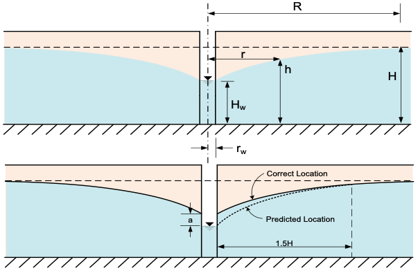

Homework - Well Equations
1. A 12 inch diameter well was installed in a thick layer of sand. The water table was at elevation 2039 ft before pumping of the well began. The well was then pumped at a rate of 30 gallons per minute and the water level in the well dropped to 2014 ft after a steady-state condition was reached. The radius of well influence is 2000 ft. The elevation of the bottom of the sand layer = 2000 ft.
a. Calculate the permeability of the sand [ft/day] assuming the aquifer is confined and D = 10 ft.
b. Calculate the permeability of the sand [ft/day] assuming the aquifer is unconfined.
2. The Dupuit assumptions used to derive the unconfined aquifer well equation results in an inaccurate estimate of the drawdown at the well and out to a distance from the well as shown below:

The correction factor is given by:
Where:
h' = corrected head [L]
h = head [L]
H = initial head prior to pumping [L]
q = flow rate [L³/T]
R = radius of influence of the well [L]
r = distance from the well [L]
k = hydraulic conductivity [L/T]
\(r_w\) = radius of the well [L]
H' = height of drawdown surface at r = 500\(r_w\) [L]
Assume the following values for the unconfined aquifer:
| Parameter | Value | Units |
|---|---|---|
| Q | 0.2 | m³/s |
| k | 0.05 | cm/s |
| H | 50 | m |
| R | 500 | m |
| \(r_w\) | 0.1 | m |
a. Calculate the head at the center of the well (r = \(r_w\)) using the corrected head equation.
b. Let r vary from rw to R. Calculate and plot the head as a function of distance (r) from the well using the corrected head equation. Start with the full correction from part (a) and assume a linear decrease in the correction term out to a value of zero at r = 1.5*H. Plot the head with and without the correction term out to a limit of r = 150 m.
Excel starter file: correction.xlsx
Python starter file: 
3. Two wells are installed a distance of 60 feet apart in an unconfined aquifer 40 feet thick. The water table is 5 feet below the ground surface. The hydraulic conductivity of the aquifer is 0.02 ft/min. The following information is also known for the wells:
Radius of well influence: 3000 ft
Diameter of well: 6 inches
Pumping rate per well: 35 gallons per minute per well
Compute and plot the drawdown surface produced by pumping the two wells under steady state conditions. Use a cross-section which passes through both wells. Do not use the "a" term to correct the drawdown. Let x range from -250 to +250 ft with increments of 10 ft assuming x=0 exactly halfway between the wells. At each x location, calculate the distance from x to each well (r1 and r2). Then calculate and head for each well independently (h1 and h2) using the unconfined aquifer well equation:
Finally, calculate the head resulting from both wells pumping simultaneously (h_comb) using the superposition equation:
Combine the original head, h1, h2, and h_combined all on the same plot. If you have done it correctly, it should look something like this:
Solve in either Excel or Python.
Excel starter file: two_wells.xlsx
Python starter file: 
Submission
Combine your spreadsheets and links to your Python notebooks into a single zip archive and submit it to Learning Suite.